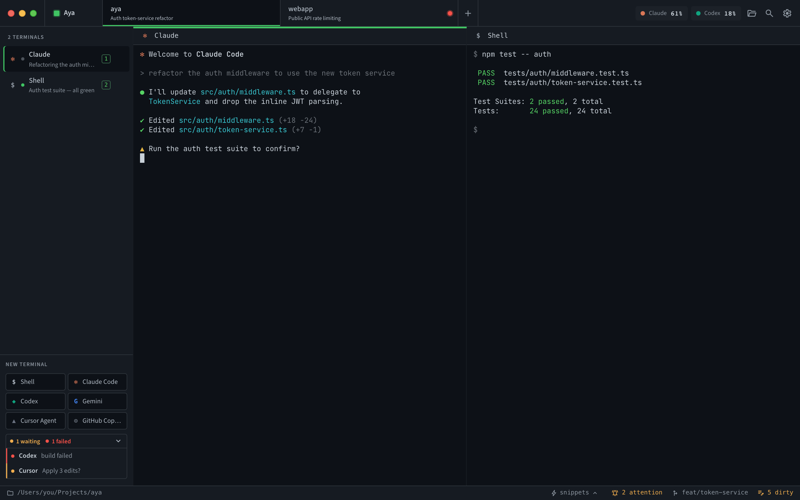

Never hunt for the blocked agent.
The status rail lists every terminal that is waiting or failed across all your open projects, even ones you are not looking at. Click a row to jump straight to that pane.
- Waiting and failed counts at a glance.
- Blocked panes in background projects still surface.
- Project tabs badge the moment an agent needs you.
